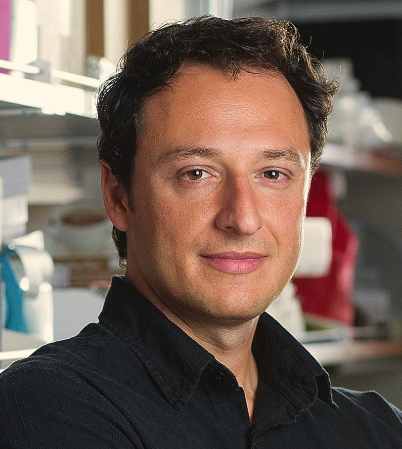
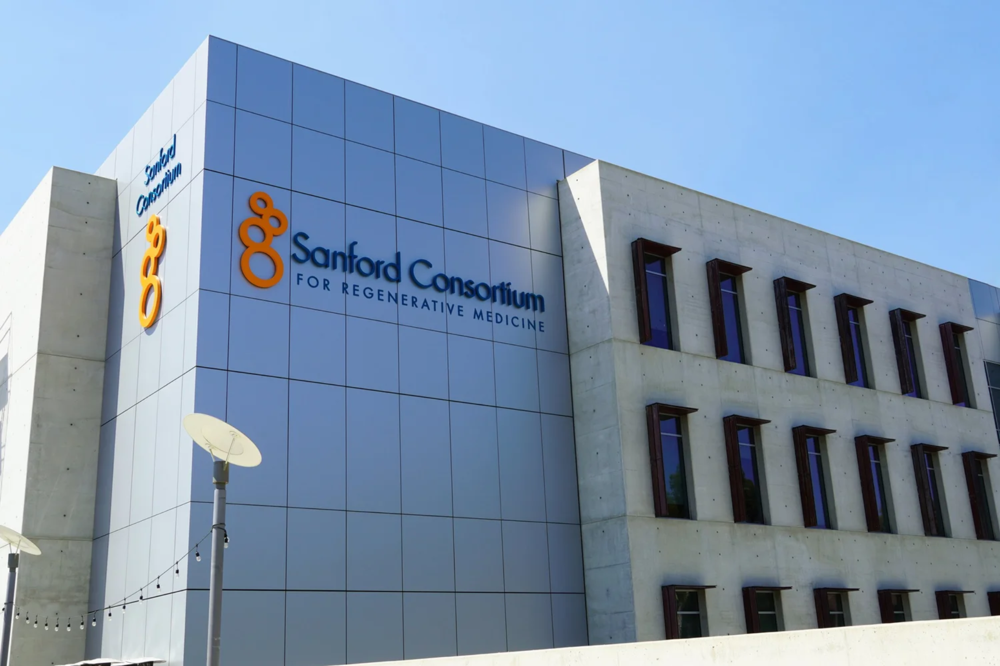
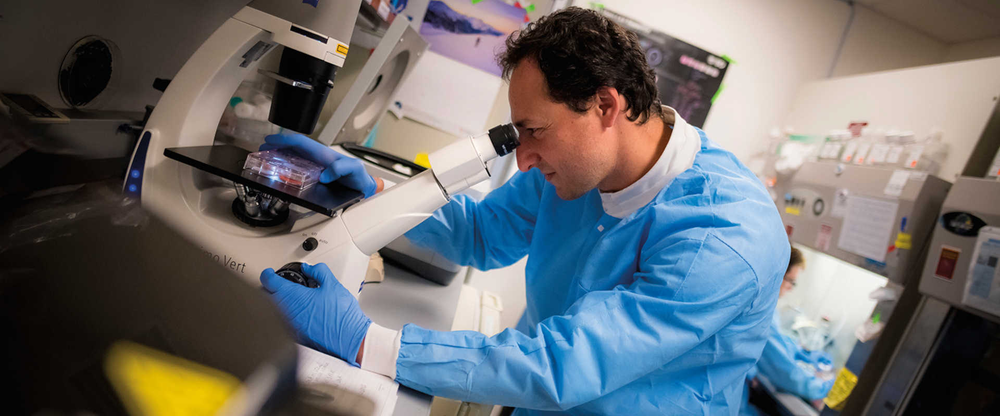

Dr. Alysson R. Muotri, Ph.D.
Profesor — Pediatría & Medicina Celular y Molecular
UC San Diego School of Medicine · Sanford Stem Cell Institute · La Jolla, California
Un investigador dedicado a las enfermedades raras del cerebro
El Dr. Muotri dirige uno de los laboratorios más avanzados del mundo en la creación de organoides cerebrales — modelos del cerebro humano desarrollados a partir de las propias células de los pacientes. Su misión durante más de quince años: dar esperanza a las familias afectadas por enfermedades raras para las cuales todavía no existe tratamiento.
"A veces solo hay un puñado de laboratorios trabajando en una enfermedad rara — cuando los hay. Me gusta dar esperanza a estos pacientes, mostrarles que hay personas que quieren estudiar su enfermedad, que no están solos."
Al transformar células de piel de pacientes en mini-cerebros funcionales en el laboratorio, su equipo puede estudiar directamente enfermedades que no se reproducen fielmente en modelos animales — y probar estrategias terapéuticas en tejido humano real.
Este enfoque ya ha contribuido al primer tratamiento aprobado por la FDA para el síndrome de Rett, y llevó al primer ensayo clínico de terapia génica para el síndrome de Pitt-Hopkins, lanzado en 2026. Para el PKS, esta investigación aún está por construirse — y eso es exactamente lo que Project PKS quiere financiar.
Enfermedades raras estudiadas por el Muotri Lab
Estos resultados concretos — del organoide al ensayo clínico — ilustran la capacidad del laboratorio para transformar la investigación fundamental en esperanza real para los pacientes.
El trabajo del laboratorio con organoides de Rett contribuyó al desarrollo del Daybue (trofinetida) — primer tratamiento aprobado por la FDA para este síndrome. Un segundo ensayo clínico, basado en antivirales probados en organoides, está actualmente en curso.
En organoides de pacientes, el laboratorio demostró que una terapia génica corregía las alteraciones neuronales. La FDA aprobó el ensayo clínico lanzado por Mahzi Therapeutics en 2026 — primera terapia génica desarrollada a partir de organoides en entrar en ensayo clínico para una enfermedad rara.
El laboratorio estudió en organoides corticales las disfunciones neuronales vinculadas a las mutaciones del gen CDKL5, contribuyendo a identificar dianas terapéuticas para este síndrome raro asociado a una epilepsia grave de inicio temprano.
Organoides creados a partir de células de niños autistas revelaron que la gravedad de los síntomas está ligada a una sobreproducción neuronal desde la etapa embrionaria — organoides sobreactivados que producen demasiadas neuronas mal conectadas. Un hallazgo que abre camino para biomarcadores tempranos y dianas terapéuticas.
En 2016, el laboratorio aportó la primera prueba experimental directa de que el virus Zika causa microcefalia — publicada en Nature. El laboratorio fue más lejos: medicamentos antivirales fueron probados directamente en los organoides infectados y demostraron protección contra el daño neurológico. De la prueba de causalidad a la prueba de tratamiento — en el mismo modelo.
El síndrome de Williams está causado por una deleción cromosómica rara (7q11.23) que produce trastornos cognitivos y neurológicos específicos. El Muotri Lab creó un modelo celular dedicado, permitiendo por primera vez el estudio de las bases moleculares y celulares de esta anomalía directamente en tejido humano.
El síndrome 8p es una anomalía cromosómica rara sin tratamiento. El Muotri Lab creó organoides cerebrales a partir de las células de los pacientes e identificó alteraciones neuronales específicas — invisibles de otro modo — directamente en los mini-cerebros. Una anomalía cromosómica compleja, modelada, analizada, y pistas biológicas concretas emergiendo.
Los organoides enviados a la ISS sufren un envejecimiento celular acelerado, reproduciendo mecanismos hasta ahora inaccesibles en laboratorio. El Muotri Lab aprovecha este fenómeno para modelar el Alzheimer y probar tratamientos en organoides con signos de neurodegeneración — un enfoque pionero a escala mundial.
No existe todavía ninguna investigación con organoides para el PKS — en ninguna parte del mundo. A partir de las células de Giulia y de otros dos niños afectados, el laboratorio creará mini-cerebros portando la anomalía cromosómica real. Objetivo: comprender los mecanismos biológicos del PKS y probar medicamentos y moléculas capaces de corregir las alteraciones observadas. Este es el primer paso hacia un tratamiento.
🎯 Por qué el Muotri Lab es particularmente adecuado para el PKS
El síndrome de Pallister-Killian es una anomalía cromosómica en mosaico — solo ciertas células están afectadas. Este es exactamente el perfil que los organoides pueden reproducir fielmente: desarrollados a partir de las propias células del paciente, preservan la anomalía real y permiten observar su impacto en el desarrollo neuronal. Ningún modelo animal puede reproducir esto de forma fidedigna.
La trayectoria del laboratorio está ahora establecida — de la investigación fundamental con organoides al ensayo clínico real. Este es el camino que Project PKS quiere abrir para los niños con síndrome de Pallister-Killian.
Trayectoria científica
- SALK INSTITUTE · 2002–2007Postdoctorado en el laboratorio de Fred Gage (Salk Institute, La Jolla). Dos publicaciones destacadas en 2005: demuestra que neuronas humanas derivadas de células madre se integran funcionalmente en un cerebro quimérico (PNAS, 2005) — y revela que el cerebro está compuesto por un mosaico de genomas neuronales causado por "genes saltadores" (L1) (Nature, 2005), derribando un dogma fundamental de la biología.
- UC SAN DIEGO · 2008Se incorpora a la Escuela de Medicina como profesor. Se convierte en director del programa de células madre del Sanford Stem Cell Institute y director del centro ISSCOR (Integrated Space Stem Cell Orbital Research).
- 2010 — PRIMER MODELO HUMANO DE ENFERMEDAD NEUROLÓGICACrea el primer modelo humano de trastorno del neurodesarrollo a partir de células madre de pacientes — y demuestra por primera vez que las alteraciones neuronales graves pueden ser revertidas en laboratorio. Estos métodos son hoy utilizados por miles de laboratorios en todo el mundo.
- 2016 — VIRUS ZIKAPrimera prueba experimental directa de que el virus Zika causa microcefalia — publicada en Nature. Demostración realizada en organoides cerebrales humanos. El laboratorio fue más lejos, probando medicamentos antivirales directamente en estos organoides.
- 2019–2024 — ESTACIÓN ESPACIAL INTERNACIONALPrimer investigador en enviar organoides cerebrales humanos al espacio (SpaceX / NASA), para estudiar su comportamiento en microgravedad y los mecanismos de envejecimiento acelerado. Seleccionado entre las 10 historias científicas del año por Discover Magazine (2019). Misiones repetidas en 2020, 2021 y 2024.
- 2020 — RETT · DOS MEDICAMENTOS CANDIDATOSEn organoides, identifica dos medicamentos candidatos que restauran casi por completo la actividad neuronal de los mini-cerebros de Rett. Sus investigaciones contribuyen al desarrollo del Daybue, primer tratamiento aprobado por la FDA para el síndrome de Rett.
- 2022 — PITT-HOPKINS · NATURE COMMUNICATIONSDemuestra en organoides que una terapia génica corrige las alteraciones neuronales del síndrome de Pitt-Hopkins a escala molecular, celular y electrofisiológica. Publicado en Nature Communications.
- 2024 — NATURE PROTOCOLSPublicación de un protocolo de referencia mundial para la creación de organoides corticales con oscilaciones neurales complejas — ahora accesible a todos los laboratorios.
- 2026 — PITT-HOPKINS: ENSAYO CLÍNICO HISTÓRICOLa FDA aprueba el primer ensayo clínico de terapia génica para el síndrome de Pitt-Hopkins, desarrollado por Mahzi Therapeutics a partir de las investigaciones del Muotri Lab. Primer tratamiento desarrollado en organoides en entrar en ensayo clínico para una enfermedad rara.
El laboratorio
El Muotri Lab está ubicado en el Sanford Consortium for Regenerative Medicine, en La Jolla, California — uno de los campus de investigación biomédica más reconocidos del mundo.


Fotos: Muotri Lab / UC San Diego Health Sciences · Utilizadas con permiso
🎬 El Dr. Alysson Muotri y el programa PKS
El trabajo del Dr. Muotri con organoides cerebrales abre perspectivas prometedoras para el estudio de enfermedades raras, incluido el síndrome de Pallister-Killian.
Premios & reconocimientos
El Dr. Alysson Muotri es un neurocientífico internacionalmente reconocido, galardonado por numerosas instituciones importantes por su trabajo en neurociencias y células madre.
La investigación sobre el PKS puede comenzar.
El laboratorio está listo. El protocolo está definido. Solo falta la financiación de la fase inicial.